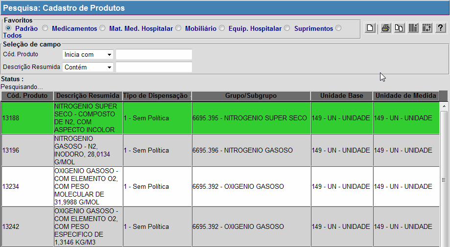
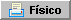
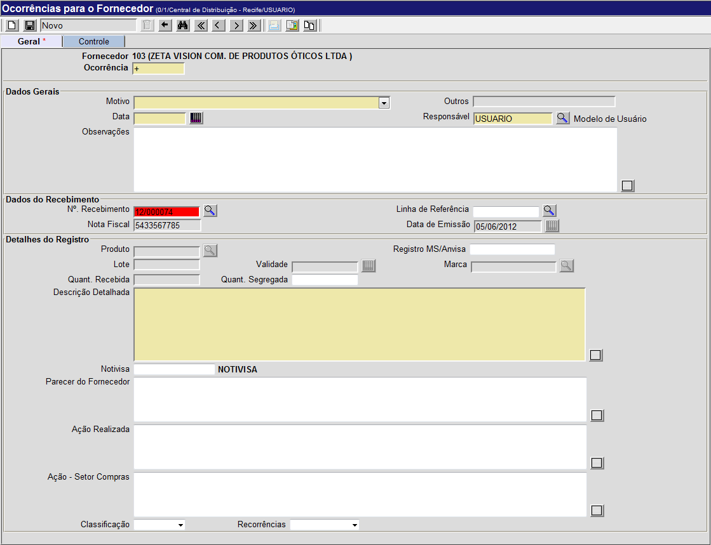

Recebimento [ Voltar ]
Utilize
este formulário para realizar recebimentos, consultar recebimentos
anteriores, anexar documentos, registrar ocorrências, etc. Para acessar
a tela, vá ao menu "Recebimento" e clique em "Fazer Recebimento".
Ao clicar no nome do
formulário, o sistema abrirá a seguinte tela:
Este
manual contém os passos para exibe o passo-a-passo para as seguintes
funcionalidades:
- Fazer
recebimento
- Consultar recebimentos anteriores
Fazer
Recebimento
1º
Passo: informe os dados principais do recebimento em questão.
- Recebimento. Este
campo apresenta por padrão um sinal de mais "+". Desta forma, assim que
o recebimento é salvo, é-lhe atribuído o próximo número de recebimento
disponível.
- Local
de Recebimento. Este campo é populado com o local onde o
usuário se encontra;
- Tipo de Recebimento. Selecione o tipo do recebimento realizado: Estoque, Doação, Empréstimo, Transferência ou Ajuste. Este campo é obrigatório;
- Cód.
Fornecedor. Informe aqui o código do fornecedor do qual se
está efetuando o recebimento. Este campo é obrigatório. Se
necessário, clique no botão
 [Procurar] ao lado do
campo "Cód.
Fornecedor" para visualizar uma lista contendo
todos os fornecedores cadastrados no
sistema. A pesquisa poderá ser feita
pela razão social, CNPJ, nome fantasia, dentre outros campos do
cadastro
de fornecedores. Certifique-se de selecionar o favorito desejado no
topo da tela: Pessoa
Física ou Pessoa
Jurídica. Selecione com um clique o fornecedor desejado;
[Procurar] ao lado do
campo "Cód.
Fornecedor" para visualizar uma lista contendo
todos os fornecedores cadastrados no
sistema. A pesquisa poderá ser feita
pela razão social, CNPJ, nome fantasia, dentre outros campos do
cadastro
de fornecedores. Certifique-se de selecionar o favorito desejado no
topo da tela: Pessoa
Física ou Pessoa
Jurídica. Selecione com um clique o fornecedor desejado;
- Observações. Deposite neste campo informações adicionais sobre o recebimento em questão;
- Processo
SES (Compra). Você pode informar aqui o número do
processo de compra da Secretaria de Saúde;
- Empenho. Este é um
campo somente para leitura. Caso este seja um recebimento com ordem de
compra, ao informá-la, será carregado aqui o número do empenho
correspondente;
- Ordem
de Fornecimento. Este campo não está disponível nesta
etapa do recebimento. Se este for um recebimento com ordem de compra, ele deverá ser informado no passo 3;
- Status
do Recebimento. É exibida aqui a situação atual do
recebimento. O status pode ser:
- Não
processado: o registro do recebimento foi criado, mas
ainda é preciso informar todos os dados necessários e processá-lo;
- Processado:
registro já processado. É possível imprimir os relatórios de
recebimento contábil e físico;
- Estornado:
este status indica que o recebimento foi processado e, estornado,
posteriormente.
2° Passo: clique no botão  para salvar o recebimento.
Uma grade para a inclusão dos produtos do recebimento será exibida na
parte inferior da tela. para salvar o recebimento.
Uma grade para a inclusão dos produtos do recebimento será exibida na
parte inferior da tela.
3º Passo: especifique os produtos do recebimento ou informe o código da ordem de fornecimento.
Se este for um recebimento originado por uma ordem de fornecimento,
especifique-a no campo de mesmo nome. Se necessário, clique no botão
[Procurar] (ver imagem abaixo) para selecioná-la a partir de uma
listagem contendo as ordens cadastradas. Em seguida, clique no botão  para carregar automaticamente
os produtos contidos na ordem. para carregar automaticamente
os produtos contidos na ordem.
Se este recebimento não tiver sido originado por uma ordem de
fornecimento, digite
na grade o código e a quantidade dos produtos deste
recebimento. Caso não saiba o código do mesmo, clique no botão
[Procurar] para pesquisá-lo pelo
nome, descrição, grupo, etc. Ao
utilizar a pesquisa, certifique-se de selecionar a opção
desejada
na seção "Favoritos" no topo da tela de busca (ver imagem abaixo). As opções de pesquisa são:
- Padrão: esta pesquisa retorna tanto
medicamentos quanto materiais médico-hospitalares;
- Medicamentos: utilize esta pesquisa para
retornar apenas os medicamentos cadastrados;
- Todos:
esta pesquisa retorna todos os produtos cadastrados e exibe os dados
gerais destes na tabela de resultados;
- Materiais
Médico-Hospitalares:
utilize
esta pesquisa para retornar apenas os materiais hospitalares cadastrados;
- Mobiliário: esta pesquisa exibe todos os móveis cadastrados no sistema;
- Suprimentos: ao selecionar este filtro, são retornados apenas os suprimentos (como papelaria, etc.) cadastrados.

Após
inserir as informações de
um produto, pressione a tecla "Enter" ou "Tab" ou clique no botão
"Novo" da grade para adicionar novos produtos a este
recebimento. Repita
esta operação para inserir
todos os itens do recebimento.

Dica: selecione um
produto e clique com o botão direito do mouse sobre o campo "Produto". Uma lista
de opções de ação é exibida (ver imagem abaixo).
- Formas
de ordenamento: ascendente e descendente. Clique
para selecionar a forma de ordenamento da grade.
Outra
opção para ordenar a grade é clicar uma ou duas vezes no nome da coluna
que deseja ordenar (Seq., Produto, Unidade, etc). Uma seta será exibida
indicando a forma de ordenamento: seta para baixo igual a um
ordenamento ascendente; seta para cima igual ordenamento
descendente.
- Cadastro
de Produtos. Clique nesta opção para acessar o cadastro do
produto selecionado em uma nova janela.
- Cód.
de Barras. Clique nesta opção para acessar, em
uma nova janela, o cadastro de código de barras para o produto
selecionado.
4° Passo: na aba
"Nota Fiscal", informe o preço unitário dos produtos recebidos. Clique na aba "Nota Fiscal" e,
no campo "Preço unitário", digite o custo individual de cada produto.
5º Passo: clique no botão para salvar o
recebimento.
6º Passo: confirme o recebimento. Se todos os dados estiverem
corretos, clique no botão  para confirmar o recebimento.
Após a confirmação, a
aba "Inspeção" estará disponível para conferência
física. para confirmar o recebimento.
Após a confirmação, a
aba "Inspeção" estará disponível para conferência
física.
Observação: após
a confirmação do recebimento, será possível desfazê-la por meio do botão  [Desconfirmar]. Este
procedimento poderá ser realizado a qualquer momento desde que o
recebimento não tenha sido processado. [Desconfirmar]. Este
procedimento poderá ser realizado a qualquer momento desde que o
recebimento não tenha sido processado.
7º Passo: clique
na aba "Inspeção" para inserir os dados da conferência
física. Informe nos campos da grade, os dados referentes ao Lote, Data de Validade, Endereço de Armazenagem, Marca, Programa e Temperatura Conferida, se aplicáveis.
Observação: para produtos com temperatura recomendada (no Cadastro de Produtos) igual a Resfriado ou Congelado,
não serão aceitos recebimentos em temperatura divergente. Neste caso,
para prosseguir com o recebimento, o seguinte deverá ser realizado:
- Desconfirme o registro por meio do botão [Desconfirmar];
- Em seguida, selecione a linha do produto com temperatura divergente e clique no botão
 [Excluir] da grade (ver imagem abaixo) para excluí-lo do recebimento; [Excluir] da grade (ver imagem abaixo) para excluí-lo do recebimento;
- Na aba "Nota Fiscal", ajuste o valor do campo "Total NF" para que reflita o valor do campo "Total do Recebimento";
- Clique no botão para salvar o registro;
- Por fim, clique no botão e prossiga as instruções do passo 7.
Importante:
deverá ser aberta uma ocorrência para este fornecedor relatando a
entrega do produto fora da temperatura de armazenagem padrão (ver passo 11).
8°
Passo: clique no
botão para salvar
o recebimento.
9º
Passo: se todos dados estiverem corretos, clique no botão  para concluir o recebimento. para concluir o recebimento.
Observação:
caso o botão de processar esteja indisponível, posicione o
cursor
do mouse sobre o botão para saber a causa da indisponibilidade. Quando
indisponíveis, os botões apresentam uma mensagem de erro quando o mouse
é posicionado sobre o botão.
10° Passo: imprimir relatórios de
recebimento contábil e físico. Após o
processamento do recebimento, os botões e  serão habilitados para
permitir a visualização da tela de impressão dos dois relatórios. Após clicar no botão
referente ao relatório desejado, clique no botão  [Imprimir]
do navegador para processar a impressão do relatório. [Imprimir]
do navegador para processar a impressão do relatório.
11° Passo: clique no botão  para registrar ocorrências do recebimento. Uma
vez processado o recebimento, a qualquer momento é possível
registrar uma ocorrência a ele relacionada.
A seguinte tela será exibida: para registrar ocorrências do recebimento. Uma
vez processado o recebimento, a qualquer momento é possível
registrar uma ocorrência a ele relacionada.
A seguinte tela será exibida:

Na parte inferior da tela são exibidas as ocorrências já registradas para o fornecedor.
- Preencha
os detalhes desta ocorrência. Todos os campos são
obrigatórios.
- Ocorrência. Este campo apresenta por padrão um sinal de "+". Desta forma, assim que
o registro é salvo, é-lhe atribuído o próximo número de ocorrência
disponível para este fornecedor;
- Motivo. Selecione um motivo para esta ocorrência. Para motivos não descritos entre as opções selecione Outros:
- Dados do faturamento (CNPJ, endereço, data de emissão da NF);
- Produto(s)
divergente(s) da ordem de compra;
- Quantidade(s) divergente(s) - nota fiscal x ordem compra;
- Condições inadequadas de pagamento;
- Divergência
de valores na nota fiscal;
- Condições inadequadas de embalagem;
- Quantidade(s) divergente(s) - nota fiscal x físico;
- Divergência(s) de lote e/ou validade - nota fiscal x físico;
- Prazo de validade inadequado;
- Lote entregue inadequado;
- Marca/Apresentação inadequada do produto;
- Desvio de temperatura dos produtos entregues;
- Atraso na entrega;
- Desvio de qualidade;
- Outros.
- Outros.
Se a opção Outros tiver sido selecionada no campo "Motivo", informe neste campo o motivo em questão;
- Data.
Especifique aqui a data em que esta ocorrência foi constatada. Se desejar, clique no botão
 para selecionar a data a partir de um calendário. Dicas para preenchimento de
campos de data: para selecionar a data a partir de um calendário. Dicas para preenchimento de
campos de data:
- Data
atual: digite o sinal . (ponto) e
pressione a tecla "Enter" para que o sistema retorne a data atual;
- Data
do mês corrente: digite o dia do mês e
pressione a tecla "Enter" para que o sistema retorne o mês e ano
correntes;
- Dias
a contar da data atual: digite o sinal + (mais) ou - (menos)
antes do número de dias em em referência à data atual e pressione a
tecla "Enter" para a data anterior ou posterior à data atual.
- Responsável. Este campo é preenchido com o nome do usuário que está logado no Sistema. Se desejar, clique no botão
[Procurar] para selecionar outro usuário cadastrado;
- Observações. Deposite aqui informações adicionais sobre a ocorrência;
- N°. Recebimento. Ao
abrir a tela de ocorrências a partir de um recebimento, este campo
será populado com o número do recebimento em questão;
- Linha de Referência. Clique no botão
[Procurar] para selecionar a linha do produto que motivou esta ocorrência;
- Nota Fiscal. Ao selecionar um recebimento, o Sistema carregará aqui a nota fiscal do recebimento em questão;
- Data de Emissão. Ao selecionar um recebimento, o Sistema carregará aqui a data de emissão da nota fiscal do recebimento em questão;
- Produto. Ao selecionar uma linha de referência de recebimento, o Sistema carregará aqui a descrição do produto em questão;
- Registro MS/Anvisa. Você pode inserir aqui o registro para o produto no Ministério de Saúde e Anvisa;
- Lote. Ao selecionar uma linha de referência de recebimento, o Sistema carregará aqui o lote do produto em questão;
- Validade. Ao selecionar uma linha de referência de recebimento, o Sistema carregará aqui a validade do produto em questão;
- Marca. Ao selecionar uma linha de referência de recebimento, o Sistema carregará aqui a marca do produto em questão;
- Quant. Recebida. Ao selecionar uma linha de referência de recebimento, o Sistema carregará aqui a quantidade recebida do produto em questão;
- Quant. Segregada. Informe aqui a quantidade segregada deste produto;
- Descrição Detalhada. Insira aqui uma descrição detalhada da ocorrência;
- Notivisa. Especifique
Informe aqui o número da notificação da ocorrência junto à ANVISA,
através do Sistema Nacional de Notificações para a Vigilância Sanitária
- NOTIVISA. Para acessar o site do Sistema de Notificações para a
Vigilância Sanitária, clique no link ao lado do campo (ver imagem
abaixo):
- Parecer do Fornecedor. Você pode depositar aqui o parecer do fornecedor sobre a ocorrência;
- Ação Tomada. Você pode depositar aqui as ações tomadas referentes a esta ocorrência;
- Classificação. Você pode selecionar aqui a classificação de gravidade da ocorrência: Grave ou Não grave;
- Recorrências. Informe aqui se há recorrências associadas.
- Clique no
botão para salvar a
ocorrência. Para cadastrar outra ocorrência, clique no
botão
 [Novo]
e repita os passos acima. [Novo]
e repita os passos acima.
Observação: caso a ocorrência em questão seja um desvio de qualidade, você pode imprimir o relatório Comunicado de Desvio de Qualidade por meio do botão  .
Para retornar à tela principal do recebimento, clique no botão  . .
12° Passo: clique
no botão  para anexar documentos e imagens ao recebimento. Notas
fiscais digitalizadas e imagens de produtos avariados podem ser anexadas ao recebimento por meio da tela "Documentos e Imagens do Recebimento". para anexar documentos e imagens ao recebimento. Notas
fiscais digitalizadas e imagens de produtos avariados podem ser anexadas ao recebimento por meio da tela "Documentos e Imagens do Recebimento".
Na parte inferior da tela são exibidos os documentos já anexados ao recebimento.
- Informe na tela os detalhes do documento. Informe
o tipo de documento, adicione uma descrição para o documento ou imagem,
selecione o arquivo que deseja carregar (upload)
e, se necessário, especifique um link adicional da internet ou
intranet (www.linkexterno.com/arquivo.pdf, por exemplo). Para
especificar o caminho do arquivo, veja abaixo:
Clique no botão 
[Upload de arquivos] para visualizar a tela de upload;
- Clique no botão para
selecionar o arquivo que deseja carregar; e
- Após selecionar o arquivo desejado, clique no
botão
 para
realizar o upload. para
realizar o upload.
- Clique no
botão para
concluir a associação do arquivo ao recebimento. Se
desejar anexar outros documentos e imagens a este recebimento, clique
no botão [Novo]
e repita os passos acima.
Para retornar à tela principal do recebimento, clique no botão .
Consultar recebimentos anteriores
Para consultar recebimentos realizados anteriormente, siga os passos abaixo.
1º Passo: clique no botão  para localizar o grupo que deseja
abrir. para localizar o grupo que deseja
abrir.
Em
seguida, utilize os favoritos de pesquisa relevante para
localizar o grupo desejado: Padrão,
Por data, Pendentes, Por Produto, Período, Aguard. Atesto/Tomb ou Aguard. Atesto/Tomb (Produto) (ver imagem abaixo).
Cada
um destes tipos de pesquisa apresentam filtros relevantes para a
característica da pesquisa em questão. Para mais informações sobre
outros recursos
e
funcionalidades da pesquisa, favor ver o manual Introdução
ao Sistema.
Assim que localizar o recebimento que deseja consultar, selecione-o com um clique.
Quando o recebimento é selecionado, o seu
cadastro é aberto e são exibidas as informações atuais.
Observe que o campo "Status" do recebimento informa a situação atual do recebimento.
|